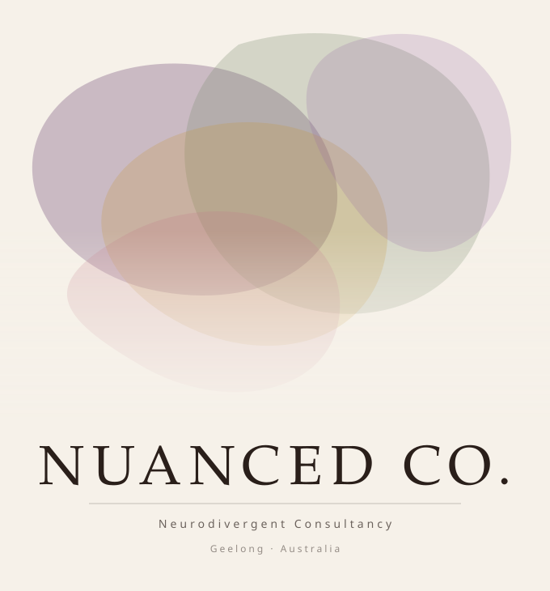
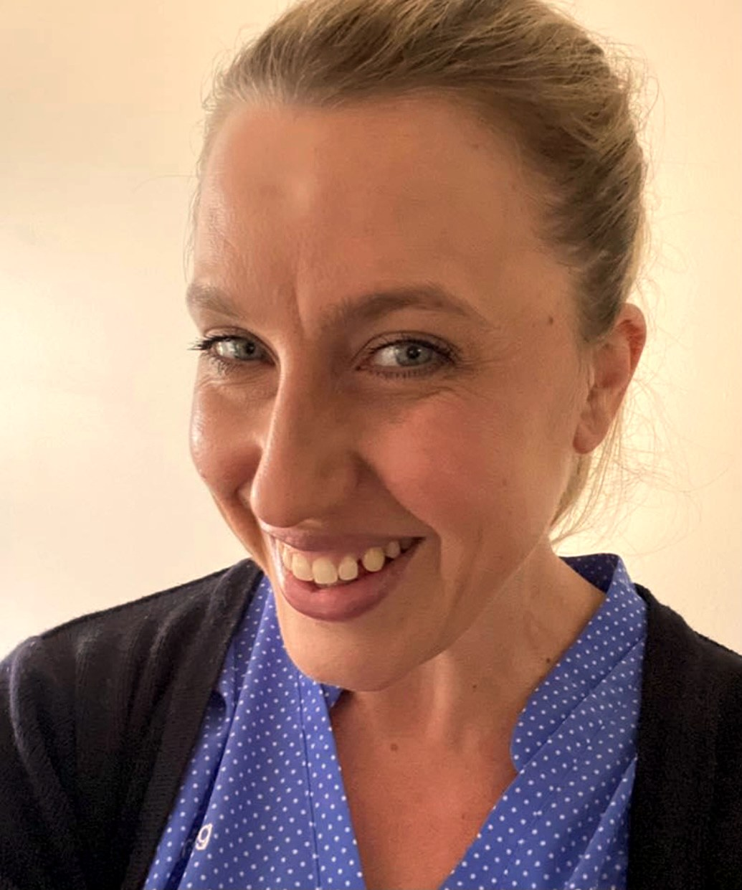

You need better structure.
Nuanced Co. helps neurodivergent adults make sense of ADHD, autism, late diagnosis and support needs without shame or generic "just try harder" advice.
Where would you like to start?
Choose the support that fits where you are now
Course · starts 1 December
Grief After Diagnosis
A five-week course for autistic, ADHD and AuDHD adults feeling relief and grief at the same time. Short lessons and a weekly live group.
About the course1:1 and workplaces
Work with Leah
Individual consultation sessions, and practical neurodivergent inclusion support for Australian organisations. Not therapy or clinical care.
Work with meStart here
Free resources
Free guides on ADHD burnout, executive dysfunction and getting diagnosed in Australia.
See resourcesLate diagnosis is not a personality flaw. It is the absence of language you always deserved.

Meet Leah
Hi, I'm Leah.
I'm a Registered Nurse, AuDHD person, and the founder of Nuanced Co., an adult neurodivergent consultancy based in Geelong. I received my own late diagnosis after years of working in clinical environments and still not being able to explain why the systems around me never quite fit.